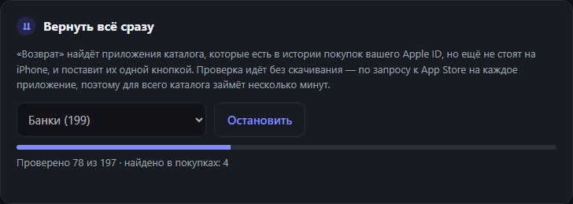

Как вернуть все банки и приложения на iPhone сразу
Не нужно вспоминать, что вы когда-то скачивали: «Возврат» сам найдёт в истории покупок всё, чего нет на iPhone, и поставит одной кнопкой.
Сбер, ВТБ, Альфа, Газпромбанк, Почта Банк — если вы пользовались многими приложениями, искать и ставить каждое по отдельности долго. С версии 1.4 «Возврат» делает это сам: проверяет историю покупок вашего Apple ID и показывает всё, что можно вернуть.
Как вернуть всё сразу
- Войдите в Apple ID и подключите iPhone, как при обычной установке.
- В карточке «Вернуть всё сразу» выберите категорию. По умолчанию стоят «Банки», можно выбрать другую или весь каталог.
- Нажмите «Найти мои приложения». Программа проверит каждое приложение категории, которого ещё нет на iPhone.

Банки проверяются примерно за пару минут, весь каталог из 441 приложения — за несколько минут. Ничего при этом не скачивается: программа только спрашивает App Store, есть ли приложение в истории покупок.
- Когда проверка закончится, появится список найденного. Снимите галочки с того, что ставить не нужно.
- Нажмите «Вернуть выбранные» — приложения встанут в очередь и поставятся по одному.

Что уже стоит на iPhone
Приложения, которые уже есть на телефоне, проверка пропускает. В каталоге они отмечены строкой «✓ На iPhone» с установленной версией, а если стоит не основной вариант — с его названием.

Если что-то не нашлось
- Приложения нет в списке. Значит, с этого Apple ID оно не скачивалось. Банки выходили под разными названиями — проверка смотрит все варианты, так что попробуйте другой Apple ID, если пользовались несколькими.
- «Нет в магазине вашей страны». Приложение есть в каталоге, но его нет в магазине страны вашего Apple ID (так бывает, например, с ChatGPT). С таким аккаунтом его не скачать.
- «Не удалось проверить». Сеть или App Store не ответили вовремя. Программа сама перепроверяет такие приложения в конце, а если не вышло и так — покажет причину и список. Запустите проверку ещё раз чуть позже.
Дальше — обновленияВозвращённые приложения App Store не обновляет. Как держать их свежими одной кнопкой — в статье об обновлениях.
Вернуть приложение на iPhone
Бесплатно, с открытым исходным кодом, для Windows, macOS и Linux.
Скачать «Возврат»